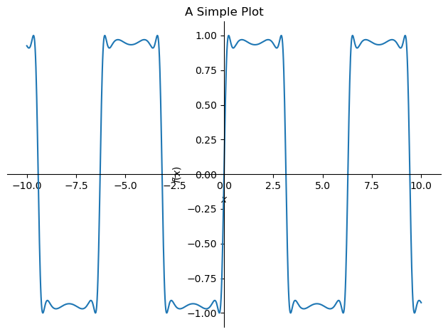
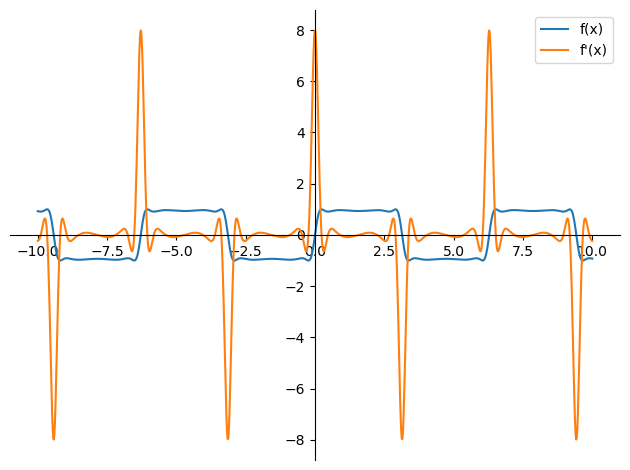
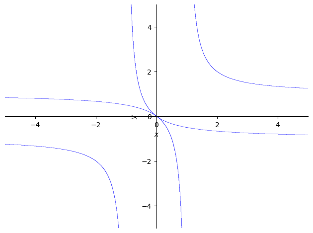
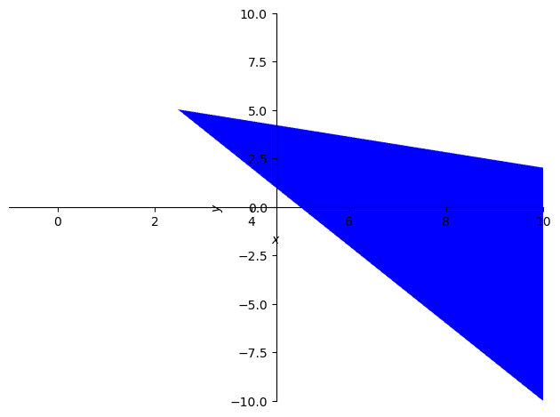
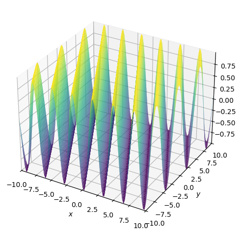
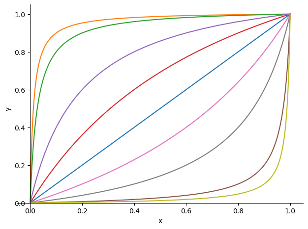

22. SymPy#
22.1. مروری کلی#
برخلاف کتابخانههای عددی که با مقادیر سروکار دارند، SymPy بر دستکاری مستقیم نمادها و عبارات ریاضی تمرکز دارد.
SymPy طیف گستردهای از قابلیتها را فراهم میکند از جمله
عبارات نمادین
حل معادلات
سادهسازی
حساب دیفرانسیل و انتگرال
ماتریسها
ریاضیات گسسته و غیره
این توابع SymPy را به یک جایگزین متنباز محبوب برای سایر نرمافزارهای محاسباتی نمادین اختصاصی مانند Mathematica تبدیل میکند.
در این سخنرانی، برخی از قابلیتهای SymPy را بررسی خواهیم کرد و نحوه استفاده از توابع اولیه SymPy برای حل مدلهای اقتصادی را نشان خواهیم داد.
22.2. شروع به کار#
ابتدا کتابخانه را وارد کرده و چاپگر را برای خروجی نمادین مقداردهی اولیه میکنیم
from sympy import *
from sympy.plotting import plot, plot3d_parametric_line, plot3d
from sympy.solvers.inequalities import reduce_rational_inequalities
from sympy.stats import Poisson, Exponential, Binomial, density, moment, E, cdf
import numpy as np
import matplotlib.pyplot as plt
# Enable the mathjax printer
init_printing(use_latex='mathjax')
22.3. جبر نمادین#
22.3.1. نمادها#
ابتدا چند نماد را برای کار با آنها مقداردهی اولیه میکنیم
x, y, z = symbols('x y z')
نمادها واحدهای اساسی برای محاسبات نمادین در SymPy هستند.
22.3.2. عبارات#
اکنون میتوانیم از نمادهای x، y و z برای ساختن عبارات و معادلات استفاده کنیم.
در اینجا ابتدا یک عبارت ساده میسازیم
expr = (x+y) ** 2
expr
میتوانیم این عبارت را با تابع expand بسط دهیم
expand_expr = expand(expr)
expand_expr
و آن را با تابع factor به فرم فاکتورگیری شده برگردانیم
factor(expand_expr)
میتوانیم این عبارت را حل کنیم
solve(expr)
توجه کنید این معادل حل معادله زیر برای x است
Note
Solvers یک ماژول مهم با ابزارهایی برای حل انواع مختلف معادلات است.
انواع مختلفی از حلکنندهها در SymPy بسته به ماهیت مسئله در دسترس هستند.
22.3.3. معادلات#
SymPy چندین تابع برای دستکاری معادلات فراهم میکند.
بیایید یک معادله با عبارتی که قبلاً تعریف کردیم توسعه دهیم
eq = Eq(expr, 0)
eq
حل این معادله نسبت به \(x\) همان خروجی حل مستقیم عبارت را میدهد
solve(eq, x)
SymPy میتواند معادلات با چندین جواب را مدیریت کند
eq = Eq(expr, 1)
solve(eq, x)
تابع solve همچنین میتواند چندین معادله را با هم ترکیب کرده و یک دستگاه معادلات را حل کند
eq2 = Eq(x, y)
eq2
solve([eq, eq2], [x, y])
همچنین میتوانیم مقدار \(y\) را با جایگزینی ساده \(x\) با \(y\) حل کنیم
expr_sub = expr.subs(x, y)
expr_sub
solve(Eq(expr_sub, 1))
در زیر نمونه معادله دیگری با نماد x و توابع sin، cos و tan با استفاده از تابع Eq آورده شده است
# Create an equation
eq = Eq(cos(x) / (tan(x)/sin(x)), 0)
eq
اکنون این معادله را با استفاده از تابع simplify ساده میکنیم
# Simplify an expression
simplified_expr = simplify(eq)
simplified_expr
دوباره از تابع solve برای حل این معادله استفاده میکنیم
# Solve the equation
sol = solve(eq, x)
sol
SymPy همچنین میتواند معادلات پیچیدهتری شامل مثلثات و اعداد مختلط را مدیریت کند.
این را با استفاده از فرمول اویلر نشان میدهیم
# 'I' represents the imaginary number i
euler = cos(x) + I*sin(x)
euler
simplify(euler)
اگر علاقهمند هستید، شما را تشویق میکنیم سخنرانی در مورد مثلثات و اعداد مختلط را مطالعه کنید.
22.3.3.1. مثال: محاسبه نقطه ثابت#
محاسبه نقطه ثابت به طور مکرر در اقتصاد و مالی استفاده میشود.
در اینجا نقطه ثابت دینامیک رشد سولو-سوان را حل میکنیم:
که در آن \(k_t\) ذخیره سرمایه است، \(f\) یک تابع تولید است، \(\delta\) نرخ استهلاک است.
ما به محاسبه نقطه ثابت این دینامیک علاقهمندیم، یعنی مقدار \(k\) به طوری که \(k_{t+1} = k_t\).
با \(f(k) = Ak^\alpha\)، میتوانیم نقطه ثابت منحصر به فرد دینامیک \(k^*\) را با استفاده از قلم و کاغذ نشان دهیم:
این میتواند به راحتی در SymPy محاسبه شود
A, s, k, α, δ = symbols('A s k^* α δ')
اکنون برای نقطه ثابت \(k^*\) حل میکنیم
# Define Solow-Swan growth dynamics
solow = Eq(s*A*k**α + (1-δ)*k, k)
solow
solve(solow, k)
22.3.4. نامساویها و منطق#
SymPy همچنین به کاربران اجازه میدهد نامساویها و عملگرهای مجموعه را تعریف کنند و طیف گستردهای از عملیات را فراهم میکند.
reduce_inequalities([2*x + 5*y <= 30, 4*x + 2*y <= 20], [x])
And(2*x + 5*y <= 30, x > 0)
22.3.5. سریها#
سریها به طور گسترده در اقتصاد و آمار، از قیمتگذاری دارایی تا انتظار متغیرهای تصادفی گسسته، استفاده میشوند.
میتوانیم یک سری ساده از جمعها را با استفاده از تابع Sum و نمادهای Indexed بسازیم
x, y, i, j = symbols("x y i j")
sum_xy = Sum(Indexed('x', i)*Indexed('y', j),
(i, 0, 3),
(j, 0, 3))
sum_xy
برای محاسبه مجموع، میتوانیم فرمول را lambdify کنیم.
عبارت lambdify شده میتواند مقادیر عددی را به عنوان ورودی برای \(x\) و \(y\) دریافت کرده و نتیجه را محاسبه کند
sum_xy = lambdify([x, y], sum_xy)
grid = np.arange(0, 4, 1)
sum_xy(grid, grid)
np.int64(36)
22.3.5.1. مثال: سپردههای بانکی#
یک بانک با \(D_0\) به عنوان سپرده در زمان \(t\) را تصور کنید.
این بانک \((1-r)\) از سپردههای خود را وام میدهد و کسری \(r\) را به عنوان ذخایر نقدی نگه میدارد.
سپردههای آن در یک افق زمانی نامحدود را میتوان به صورت زیر نوشت
بیایید سپردهها را در زمان \(t\) محاسبه کنیم
D = symbols('D_0')
r = Symbol('r', positive=True)
Dt = Sum('(1 - r)^i * D_0', (i, 0, oo))
Dt
میتوانیم متد doit را برای محاسبه سری فراخوانی کنیم
Dt.doit()
سادهسازی عبارت بالا نتیجه زیر را میدهد
simplify(Dt.doit())
این با راهحل در سخنرانی در مورد سری هندسی سازگار است.
22.3.5.2. مثال: متغیر تصادفی گسسته#
در مثال زیر، انتظار یک متغیر تصادفی گسسته را محاسبه میکنیم.
بیایید یک متغیر تصادفی گسسته \(X\) با توزیع پواسون تعریف کنیم:
λ = symbols('lambda')
# We refine the symbol x to positive integers
x = Symbol('x', integer=True, positive=True)
pmf = λ**x * exp(-λ) / factorial(x)
pmf
میتوانیم بررسی کنیم که آیا مجموع احتمالات برای تمام مقادیر ممکن برابر با \(1\) است:
sum_pmf = Sum(pmf, (x, 0, oo))
sum_pmf.doit()
انتظار توزیع به صورت زیر است:
fx = Sum(x*pmf, (x, 0, oo))
fx.doit()
SymPy شامل یک ماژول فرعی آمار به نام Stats است.
Stats توزیعهای داخلی و توابعی روی توزیعهای احتمال ارائه میدهد.
محاسبه بالا همچنین میتواند با استفاده از تابع انتظار E در ماژول Stats به یک خط فشرده شود
λ = Symbol("λ", positive = True)
# Using sympy.stats.Poisson() method
X = Poisson("x", λ)
E(X)
22.4. حساب دیفرانسیل و انتگرال نمادین#
SymPy به ما اجازه میدهد عملیات مختلف حساب دیفرانسیل و انتگرال مانند حد، مشتقگیری و انتگرالگیری را انجام دهیم.
22.4.1. حدها#
میتوانیم حد را برای یک عبارت داده شده با استفاده از تابع limit محاسبه کنیم
# Define an expression
f = x**2 / (x-1)
# Compute the limit
lim = limit(f, x, 0)
lim
22.4.2. مشتقات#
میتوانیم هر عبارت SymPy را با استفاده از تابع diff مشتقگیری کنیم
# Differentiate a function with respect to x
df = diff(f, x)
df
22.4.3. انتگرالها#
میتوانیم انتگرالهای معین و نامعین را با استفاده از تابع integrate محاسبه کنیم
# Calculate the indefinite integral
indef_int = integrate(df, x)
indef_int
بیایید از این تابع برای محاسبه تابع مولد گشتاور توزیع نمایی با تابع چگالی احتمال استفاده کنیم:
λ = Symbol('lambda', positive=True)
x = Symbol('x', positive=True)
pdf = λ * exp(-λ*x)
pdf
t = Symbol('t', positive=True)
moment_t = integrate(exp(t*x) * pdf, (x, 0, oo))
simplify(moment_t)
توجه کنید که همچنین میتوانیم از ماژول Stats برای محاسبه گشتاور استفاده کنیم
X = Exponential(x, λ)
moment(X, 1)
E(X**t)
با استفاده از تابع integrate، میتوانیم تابع چگالی تجمعی توزیع نمایی با \(\lambda = 0.5\) را استخراج کنیم
λ_pdf = pdf.subs(λ, 1/2)
λ_pdf
integrate(λ_pdf, (x, 0, 4))
استفاده از cdf در ماژول Stats همان راهحل را میدهد
cdf(X, 1/2)
# Plug in a value for z
λ_cdf = cdf(X, 1/2)(4)
λ_cdf
# Substitute λ
λ_cdf.subs({λ: 1/2})
22.5. ترسیم نمودار#
SymPy یک قابلیت ترسیم نمودار قدرتمند فراهم میکند.
ابتدا یک تابع ساده را با استفاده از تابع plot ترسیم میکنیم
f = sin(2 * sin(2 * sin(2 * sin(x))))
p = plot(f, (x, -10, 10), show=False)
p.title = 'A Simple Plot'
p.show()

مشابه Matplotlib، SymPy یک رابط برای سفارشیسازی نمودار فراهم میکند
plot_f = plot(f, (x, -10, 10),
xlabel='', ylabel='',
legend = True, show = False)
plot_f[0].label = 'f(x)'
df = diff(f)
plot_df = plot(df, (x, -10, 10),
legend = True, show = False)
plot_df[0].label = 'f\'(x)'
plot_f.append(plot_df[0])
plot_f.show()

همچنین از ترسیم توابع ضمنی و تجسم نامساویها پشتیبانی میکند
p = plot_implicit(Eq((1/x + 1/y)**2, 1))

p = plot_implicit(And(2*x + 5*y <= 30, 4*x + 2*y >= 20),
(x, -1, 10), (y, -10, 10))

و تجسمسازی در فضای سهبعدی
p = plot3d(cos(2*x + y), zlabel='')

22.6. کاربرد: اقتصاد مبادله دو نفره#
یک اقتصاد مبادله خالص با دو نفر (\(a\) و \(b\)) و دو کالا که به صورت نسبتها (\(x\) و \(y\)) ثبت شدهاند را تصور کنید.
آنها میتوانند کالاها را با یکدیگر مطابق با ترجیحات خود معامله کنند.
فرض کنید توابع مطلوبیت مصرفکنندگان به صورت زیر داده شده است
که در آن \(\alpha, \beta \in (0, 1)\).
ابتدا نمادها و توابع مطلوبیت را تعریف میکنیم
# Define symbols and utility functions
x, y, α, β = symbols('x, y, α, β')
u_a = x**α * y**(1-α)
u_b = (1 - x)**β * (1 - y)**(1 - β)
u_a
u_b
ما به تخصیص بهینه پارتو کالاهای \(x\) و \(y\) علاقهمندیم.
توجه کنید که یک نقطه زمانی کارای پارتو است که تخصیص برای یک نفر با توجه به تخصیص برای شخص دیگر بهینه باشد.
از نظر مطلوبیت نهایی:
# A point is Pareto efficient when the allocation is optimal
# for one person given the allocation for the other person
pareto = Eq(diff(u_a, x)/diff(u_a, y),
diff(u_b, x)/diff(u_b, y))
pareto
# Solve the equation
sol = solve(pareto, y)[0]
sol
بیایید تخصیصهای بهینه پارتو اقتصاد (منحنیهای قرارداد) را با \(\alpha = \beta = 0.5\) با استفاده از SymPy محاسبه کنیم
# Substitute α = 0.5 and β = 0.5
sol.subs({α: 0.5, β: 0.5})
میتوانیم از این نتیجه برای تجسم منحنیهای قرارداد بیشتر تحت پارامترهای مختلف استفاده کنیم
# Plot a range of αs and βs
params = [{α: 0.5, β: 0.5},
{α: 0.1, β: 0.9},
{α: 0.1, β: 0.8},
{α: 0.8, β: 0.9},
{α: 0.4, β: 0.8},
{α: 0.8, β: 0.1},
{α: 0.9, β: 0.8},
{α: 0.8, β: 0.4},
{α: 0.9, β: 0.1}]
p = plot(xlabel='x', ylabel='y', show=False)
for param in params:
p_add = plot(sol.subs(param), (x, 0, 1),
show=False)
p.append(p_add[0])
p.show()

شما را دعوت میکنیم با پارامترها بازی کنید و ببینید منحنیهای قرارداد چگونه تغییر میکنند و در مورد دو سؤال زیر فکر کنید:
آیا میتوانید راهی برای ترسیم همان نمودار با استفاده از
numpyبه نظر بیاورید؟پیادهسازی
numpyچقدر دشوار خواهد بود؟
22.7. تمرینات#
Exercise 22.1
قاعده لوپیتال بیان میکند که برای دو تابع \(f(x)\) و \(g(x)\)، اگر \(\lim_{x \to a} f(x) = \lim_{x \to a} g(x) = 0\) یا \(\pm \infty\)، آنگاه
از SymPy برای تأیید قاعده لوپیتال برای توابع زیر استفاده کنید
وقتی \(x\) به \(0\) نزدیک میشود
Solution to Exercise 22.1
بیایید ابتدا تابع را تعریف کنیم
f_upper = y**x - 1
f_lower = x
f = f_upper/f_lower
f
Sympy به اندازه کافی هوشمند است که این حد را حل کند
lim = limit(f, x, 0)
lim
نتیجه پیشنهادی قاعده لوپیتال را مقایسه میکنیم
lim = limit(diff(f_upper, x)/
diff(f_lower, x), x, 0)
lim
Exercise 22.2
برآورد حداکثر درستنمایی (MLE) روشی برای برآورد پارامترهای یک مدل آماری است.
این روش معمولاً شامل حداکثرسازی یک تابع لگاریتم درستنمایی و حل مشتق مرتبه اول است.
توزیع دوجملهای به صورت زیر داده میشود
که در آن \(n\) تعداد آزمایشها و \(x\) تعداد موفقیتها است.
فرض کنید ما یک سری نتایج دودویی با \(x\) موفقیت از \(n\) آزمایش مشاهده کردیم.
MLE \(θ\) را با استفاده از SymPy محاسبه کنید
Solution to Exercise 22.2
ابتدا، توزیع دوجملهای را تعریف میکنیم
n, x, θ = symbols('n x θ')
binomial_factor = (factorial(n)) / (factorial(x)*factorial(n-x))
binomial_factor
bino_dist = binomial_factor * ((θ**x)*(1-θ)**(n-x))
bino_dist
اکنون تابع لگاریتم درستنمایی را محاسبه کرده و برای نتیجه حل میکنیم
log_bino_dist = log(bino_dist)
log_bino_diff = simplify(diff(log_bino_dist, θ))
log_bino_diff
solve(Eq(log_bino_diff, 0), θ)[0]